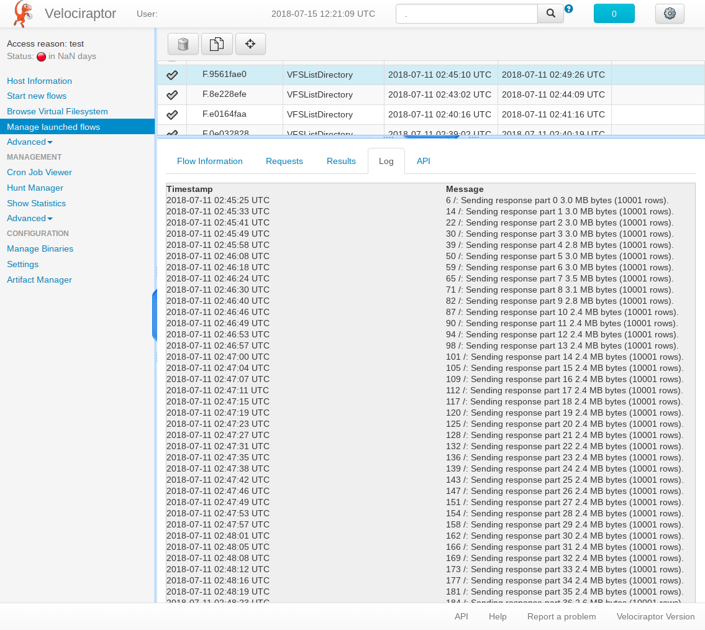

Browsing around the filesystem.
The Virtual File System
Like GRR, Velociraptor also maintains a virtual file system view (VFS) of the client's filesystem. GRR's VFS view is generated by adding a row for each file into the database. In order to refresh the view of a certain directory, GRR issues a ListDirectory request and updates the database by storing each newly discovered file in its own row.
Velociraptor models the client's VFS as a per-directory VQL query. In order to refresh the view of a certain directory, a new VQL query is issued to the client, essentially collecting the glob information for that directory in a single VQL response table. The VQL result is then stored in a single database row. Therefore Velociraptor stores a single row per directory (as compared to GRR's single row per file approach). This leads to a huge reduction in database rows.
The tradeoff however, is that the Velociraptor VFS view can only show the state of the entire directory listing at a single point in time. GRR's VFS viewer can show old files (which have been removed) mixed in with current files because it can merge the output of different ListDirectory operations that occurred in different times. We decided this feature was not often useful and sometimes actually led to confusion since files that are removed from a directory are shown together with files currently present. Velociraptor therefore shows the VFS directory at the latest timestamp the entire directory was fetched.
Recursive VFS refresh
Users who are more familiar with traditional forensic tools (or GUI file managers like Windows Explorer) usually attempt to browse the client's VFS view interactively, searching for files and directories relevant to the case. However, since the VFS view is only a cached database view of the real client's file system, we need to go to the client to refresh the cache whenever we try to view a directory in the VFS which had not yet been fetched from the client.
Since clients are not always online, some users attempt to just recursively refresh the entire VFS view (i.e. recursively list all client directories from the root). This is however, an expensive operation (This is at least as expensive as running a recursive "find / -ls" command on the commandline). Due to GRR's extensive data model and complex multi-round trip flow model, performing a recursive VFS refresh with GRR is unlikely to work in any reasonable time (typically the flow will run for a while then hang due to race conditions in the frontend).
On the other hand, Velociraptor issues a single VQL request as a recursive directory glob and stores the entire directory content in a single VQL response taken at an instance in time. The response is streamed back to the server. The server simply splits the response table into directory specific tables, and then stores a single VQL response table for each directory in the database.
Note
The VQL glob() plugin is guaranteed to generate results in breadth first order. This means that it emits information about all files in the same directory first, before recursing into sub directories. This feature makes it simple to split the result table into directory specific sub-tables by simply watching the FullPath column and noting when its directory changes.

Very large VQL queries
While we claimed above that Velociraptor simply issues a single VQL query and stores its result in a single database row, this was an oversimplification. If the VQL query generates too many rows, the Velociraptor client splits the response into parts (by default 10000 rows per part). This allows data to be uploaded immediately to the server and processed while the query is still executing on the client.
Consider the VFSListDirectoryflow was issued with a glob of /**10 (i.e. refresh the entire VFS view from the root directory, recursively into a depth of 10 directories). The VQL query executed was:
SELECT FullPath AS _FullPath, Name, Size, Mode, timestamp(epoch=Sys.Mtim.Sec) AS mtime, timestamp(epoch=Sys.Atim.Sec) AS atime, timestamp(epoch=Sys.Ctim.Sec) AS ctime FROM glob(globs='/**10')
The query was issued to a Velociraptor client running on a Chromebook. This particular system has approximately 500k files in its root filesystem, and so the response consists of 500k rows. However, as the query executes, the response is split into multiple parts, each being 10k rows, and uploaded (each part is about 3mb in total).
Total execution time for this query is about 4 minutes and consists of about 50 parts (around 2.5mb each). It is still an expensive query, but depending on the urgency of the case, it may well be warranted.
It is very convenient to just take a snapshot of the entire filesystem, especially when the client is offline. We can issue the flow and then when the client comes back online we can review all the files.
File uploads
The VFS view is just a local cache in the data store of what is really going on the client. While we can see the file in each directory we cant transfer all the file content. Velociraptor represents downloaded files differently from just listed files. Files with the floppy disk next to them represent files that we have a local cache for. We can view the Hexview or just download them.
You can always initiate a download of a VFS file by selecting the Download tab. Unlike GRR, Velociraptor does not keep previous versions of files - a re-download will overwrite the previous file.